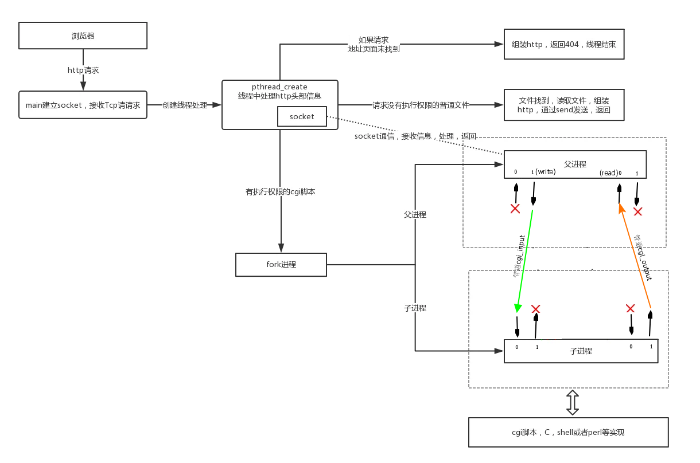

首先，本人刚刚开始开源代码精读，写的不对的地方，大家轻拍，一起进步。本文是对Tinyhttpd的一次精读，大家每天都在用着http服务，很多人也一直活跃在上层，使用IIS、Apache等，大家是否想看看http服务器大概是怎么运作的，通过一个500多行的源码加上完整的注释，和大家逛一逛http服务器。Tinyhttpd真的非常适合阅读尤其是刚入门的，清晰的代码，简单的makefile...其实有很多分析tinyghttpd的，这边抱着人家写的是人家，自己写的才是自己的态度，写的尽量详细，尽量简单，很多都写在代码注释里面，也把学习中的一些坑翻出来和大家一起读读，吸取将近20年前的大神通过500行代码带给我们的财富。不管你是写c的，或者C#，js亦或java，只要用到http的都欢迎读读。
大家看后如果觉得我有写的不对的地方，欢迎指出~~
附上注解代码的github地址：
https://github.com/nengm/Tinyhttpd
1.首先是一张图 全解了Tinyhttp是如何运作的，我觉得图说明比我用文字描述的要清晰，语言功底不太给力。

2. 主要函数简略说明，代码中进行了详细注释。
main 主函数
startup 绑定监听套接字
accept_request 每次收到请求，创建一个线程来处理接受到的请求
serve_file 接读取文件返回给请求的http客户端
execute_cgi 执行cgi文件
3.注意点
注意点1：
index.html必须没有执行权限，否则看不到内容，并且会产生Program received signal SIGPIPE, Broken pipe，因为程序中如果有可执行权限会当cgi脚本处理。所以假如html有执行权限先把它去除了，chmod 600 index.html
color.cgi、date.cgi必须要有执行权限。
注意点2：
color.cgi是用perl写的，相信大家很少接触了。所以可以引用网上一个简单的例子，换成一个shell写的cgi测试
#!/bin/bash
echo "Content-Type: text/html"
echo
echo "<HTML><BODY>"
echo "<CENTER>Today is:</CENTER>"
echo "<CENTER><B>"
date
echo "</B></CENTER>"
echo "</BODY></HTML>"
4.操作file:///D:/guojicheng/桌面/imgclip.pn
{kind=link}
1.执行make，生成成功，./httpd启动成功。

2.如果在当前linux下的firefox下执行。直接在浏览器中输入

3.在windows中测试，

4.测试执行自带的perl写的cgi脚本

5.进入index2.html页面，测试shell写的cgi脚本。

1 /* J. David's webserver */ 2 /* This is a simple webserver. 3 * Created November 1999 by J. David Blackstone. 4 * CSE 4344 (Network concepts), Prof. Zeigler 5 * University of Texas at Arlington 6 */ 7 /* This program compiles for Sparc Solaris 2.6. 8 * To compile for Linux: 9 * 1) Comment out the #include <pthread.h> line. 10 * 2) Comment out the line that defines the variable newthread. 11 * 3) Comment out the two lines that run pthread_create(). 12 * 4) Uncomment the line that runs accept_request(). 13 * 5) Remove -lsocket from the Makefile. 14 */ 15 #include <stdio.h> 16 #include <sys/socket.h> 17 #include <sys/types.h> 18 #include <netinet/in.h> 19 #include <arpa/inet.h> 20 #include <unistd.h> 21 #include <ctype.h> 22 #include <strings.h> 23 #include <string.h> 24 #include <sys/stat.h> 25 #include <pthread.h> 26 #include <sys/wait.h> 27 #include <stdlib.h> 28 29 //宏定义，是否是空格 30 #define ISspace(x) isspace((int)(x)) 31 32 #define SERVER_STRING "Server: jdbhttpd/0.1.0\r\n" 33 34 //每次收到请求，创建一个线程来处理接受到的请求 35 //把client_sock转成地址作为参数传入pthread_create 36 void accept_request(void *arg); 37 38 //错误请求 39 void bad_request(int); 40 41 //读取文件 42 void cat(int, FILE *); 43 44 //无法执行 45 void cannot_execute(int); 46 47 //错误输出 48 void error_die(const char *); 49 50 //执行cig脚本 51 void execute_cgi(int, const char *, const char *, const char *); 52 53 //得到一行数据,只要发现c为\n,就认为是一行结束，如果读到\r,再用MSG_PEEK的方式读入一个字符，如果是\n，从socket用读出 54 //如果是下个字符则不处理，将c置为\n，结束。如果读到的数据为0中断，或者小于0，也视为结束，c置为\n 55 int get_line(int, char *, int); 56 57 //返回http头 58 void headers(int, const char *); 59 60 //没有发现文件 61 void not_found(int); 62 63 //如果不是CGI文件，直接读取文件返回给请求的http客户端 64 void serve_file(int, const char *); 65 66 //开启tcp连接，绑定端口等操作 67 int startup(u_short *); 68 69 //如果不是Get或者Post，就报方法没有实现 70 void unimplemented(int); 71 72 // Http请求，后续主要是处理这个头 73 // 74 // GET / HTTP/1.1 75 // Host: 192.168.0.23:47310 76 // Connection: keep-alive 77 // Upgrade-Insecure-Requests: 1 78 // User-Agent: Mozilla/5.0 (Windows NT 6.1; WOW64) AppleWebKit/537.36 (KHTML, like Gecko) Chrome/55.0.2883.87 Safari/537.36 79 // Accept: text/html,application/xhtml+xml,application/xml;q=0.9,image/webp,*/*; q = 0.8 80 // Accept - Encoding: gzip, deflate, sdch 81 // Accept - Language : zh - CN, zh; q = 0.8 82 // Cookie: __guid = 179317988.1576506943281708800.1510107225903.8862; monitor_count = 5 83 // 84 85 // POST / color1.cgi HTTP / 1.1 86 // Host: 192.168.0.23 : 47310 87 // Connection : keep - alive 88 // Content - Length : 10 89 // Cache - Control : max - age = 0 90 // Origin : http ://192.168.0.23:40786 91 // Upgrade - Insecure - Requests : 1 92 // User - Agent : Mozilla / 5.0 (Windows NT 6.1; WOW64) AppleWebKit / 537.36 (KHTML, like Gecko) Chrome / 55.0.2883.87 Safari / 537.36 93 // Content - Type : application / x - www - form - urlencoded 94 // Accept : text / html, application / xhtml + xml, application / xml; q = 0.9, image / webp, */*;q=0.8 95 // Referer: http://192.168.0.23:47310/ 96 // Accept-Encoding: gzip, deflate 97 // Accept-Language: zh-CN,zh;q=0.8 98 // Cookie: __guid=179317988.1576506943281708800.1510107225903.8862; monitor_count=281 99 // Form Data 100 // color=gray 101 102 /**********************************************************************/ 103 /* A request has caused a call to accept() on the server port to 104 * return. Process the request appropriately. 105 * Parameters: the socket connected to the client */ 106 /**********************************************************************/ 107 void accept_request(void *arg) 108 { 109 //socket 110 int client = (intptr_t)arg; 111 char buf[1024]; 112 int numchars; 113 char method[255]; 114 char url[255]; 115 char path[512]; 116 size_t i, j; 117 struct stat st; 118 int cgi = 0; /* becomes true if server decides this is a CGI 119 * program */ 120 char *query_string = NULL; 121 //根据上面的Get请求，可以看到这边就是取第一行 122 //这边都是在处理第一条http信息 123 //"GET / HTTP/1.1\n" 124 numchars = get_line(client, buf, sizeof(buf)); 125 i = 0; j = 0; 126 127 //第一行字符串提取Get 128 while (!ISspace(buf[j]) && (i < sizeof(method) - 1)) 129 { 130 method[i] = buf[j]; 131 i++; j++; 132 } 133 //结束 134 method[i] = '\0'; 135 136 //判断是Get还是Post 137 if (strcasecmp(method, "GET") && strcasecmp(method, "POST")) 138 { 139 unimplemented(client); 140 return; 141 } 142 143 //如果是POST，cgi置为1 144 if (strcasecmp(method, "POST") == 0) 145 cgi = 1; 146 147 i = 0; 148 //跳过空格 149 while (ISspace(buf[j]) && (j < sizeof(buf))) 150 j++; 151 152 //得到 "/" 注意：如果你的http的网址为http://192.168.0.23:47310/index.html 153 // 那么你得到的第一条http信息为GET /index.html HTTP/1.1，那么 154 // 解析得到的就是/index.html 155 while (!ISspace(buf[j]) && (i < sizeof(url) - 1) && (j < sizeof(buf))) 156 { 157 url[i] = buf[j]; 158 i++; j++; 159 } 160 url[i] = '\0'; 161 162 //判断Get请求 163 if (strcasecmp(method, "GET") == 0) 164 { 165 query_string = url; 166 while ((*query_string != '?') && (*query_string != '\0')) 167 query_string++; 168 if (*query_string == '?') 169 { 170 cgi = 1; 171 *query_string = '\0'; 172 query_string++; 173 } 174 } 175 176 //路径 177 sprintf(path, "htdocs%s", url); 178 179 //默认地址，解析到的路径如果为/，则自动加上index.html 180 if (path[strlen(path) - 1] == '/') 181 strcat(path, "index.html"); 182 183 //获得文件信息 184 if (stat(path, &st) == -1) { 185 //把所有http信息读出然后丢弃 186 while ((numchars > 0) && strcmp("\n", buf)) /* read & discard headers */ 187 numchars = get_line(client, buf, sizeof(buf)); 188 189 //没有找到 190 not_found(client); 191 } 192 else 193 { 194 if ((st.st_mode & S_IFMT) == S_IFDIR) 195 strcat(path, "/index.html"); 196 //如果你的文件默认是有执行权限的，自动解析成cgi程序，如果有执行权限但是不能执行，会接受到报错信号 197 if ((st.st_mode & S_IXUSR) || 198 (st.st_mode & S_IXGRP) || 199 (st.st_mode & S_IXOTH) ) 200 cgi = 1; 201 if (!cgi) 202 //接读取文件返回给请求的http客户端 203 serve_file(client, path); 204 else 205 //执行cgi文件 206 execute_cgi(client, path, method, query_string); 207 } 208 //执行完毕关闭socket 209 close(client); 210 } 211 212 /**********************************************************************/ 213 /* Inform the client that a request it has made has a problem. 214 * Parameters: client socket */ 215 /**********************************************************************/ 216 void bad_request(int client) 217 { 218 char buf[1024]; 219 220 sprintf(buf, "HTTP/1.0 400 BAD REQUEST\r\n"); 221 send(client, buf, sizeof(buf), 0); 222 sprintf(buf, "Content-type: text/html\r\n"); 223 send(client, buf, sizeof(buf), 0); 224 sprintf(buf, "\r\n"); 225 send(client, buf, sizeof(buf), 0); 226 sprintf(buf, "<P>Your browser sent a bad request, "); 227 send(client, buf, sizeof(buf), 0); 228 sprintf(buf, "such as a POST without a Content-Length.\r\n"); 229 send(client, buf, sizeof(buf), 0); 230 } 231 232 /**********************************************************************/ 233 /* Put the entire contents of a file out on a socket. This function 234 * is named after the UNIX "cat" command, because it might have been 235 * easier just to do something like pipe, fork, and exec("cat"). 236 * Parameters: the client socket descriptor 237 * FILE pointer for the file to cat */ 238 /**********************************************************************/ 239 240 //得到文件内容，发送 241 void cat(int client, FILE *resource) 242 { 243 char buf[1024]; 244 245 fgets(buf, sizeof(buf), resource); 246 //循环读 247 while (!feof(resource)) 248 { 249 send(client, buf, strlen(buf), 0); 250 fgets(buf, sizeof(buf), resource); 251 } 252 } 253 254 /**********************************************************************/ 255 /* Inform the client that a CGI script could not be executed. 256 * Parameter: the client socket descriptor. */ 257 /**********************************************************************/ 258 void cannot_execute(int client) 259 { 260 char buf[1024]; 261 262 sprintf(buf, "HTTP/1.0 500 Internal Server Error\r\n"); 263 send(client, buf, strlen(buf), 0); 264 sprintf(buf, "Content-type: text/html\r\n"); 265 send(client, buf, strlen(buf), 0); 266 sprintf(buf, "\r\n"); 267 send(client, buf, strlen(buf), 0); 268 sprintf(buf, "<P>Error prohibited CGI execution.\r\n"); 269 send(client, buf, strlen(buf), 0); 270 } 271 272 /**********************************************************************/ 273 /* Print out an error message with perror() (for system errors; based 274 * on value of errno, which indicates system call errors) and exit the 275 * program indicating an error. */ 276 /**********************************************************************/ 277 void error_die(const char *sc) 278 { 279 perror(sc); 280 exit(1); 281 } 282 283 /**********************************************************************/ 284 /* Execute a CGI script. Will need to set environment variables as 285 * appropriate. 286 * Parameters: client socket descriptor 287 * path to the CGI script */ 288 /**********************************************************************/ 289 void execute_cgi(int client, const char *path, 290 const char *method, const char *query_string) 291 { 292 //缓冲区 293 char buf[1024]; 294 295 //2根管道 296 int cgi_output[2]; 297 int cgi_input[2]; 298 299 //进程pid和状态 300 pid_t pid; 301 int status; 302 303 int i; 304 char c; 305 306 //读取的字符数 307 int numchars = 1; 308 309 //http的content_length 310 int content_length = -1; 311 312 //默认字符 313 buf[0] = 'A'; buf[1] = '\0'; 314 315 //忽略大小写比较字符串 316 if (strcasecmp(method, "GET") == 0) 317 //读取数据，把整个header都读掉，以为Get写死了直接读取index.html，没有必要分析余下的http信息了 318 while ((numchars > 0) && strcmp("\n", buf)) /* read & discard headers */ 319 numchars = get_line(client, buf, sizeof(buf)); 320 else /* POST */ 321 { 322 numchars = get_line(client, buf, sizeof(buf)); 323 while ((numchars > 0) && strcmp("\n", buf)) 324 { 325 //如果是POST请求，就需要得到Content-Length，Content-Length：这个字符串一共长为15位，所以 326 //取出头部一句后，将第16位设置结束符，进行比较 327 //第16位置为结束 328 buf[15] = '\0'; 329 if (strcasecmp(buf, "Content-Length:") == 0) 330 //内存从第17位开始就是长度，将17位开始的所有字符串转成整数就是content_length 331 content_length = atoi(&(buf[16])); 332 numchars = get_line(client, buf, sizeof(buf)); 333 } 334 if (content_length == -1) { 335 bad_request(client); 336 return; 337 } 338 } 339 340 sprintf(buf, "HTTP/1.0 200 OK\r\n"); 341 send(client, buf, strlen(buf), 0); 342 //建立output管道 343 if (pipe(cgi_output) < 0) { 344 cannot_execute(client); 345 return; 346 } 347 348 //建立input管道 349 if (pipe(cgi_input) < 0) { 350 cannot_execute(client); 351 return; 352 } 353 // fork后管道都复制了一份，都是一样的 354 // 子进程关闭2个无用的端口，避免浪费 355 // ×<------------------------->1 output 356 // 0<-------------------------->× input 357 358 // 父进程关闭2个无用的端口，避免浪费 359 // 0<-------------------------->× output 360 // ×<------------------------->1 input 361 // 此时父子进程已经可以通信 362 363 364 //fork进程，子进程用于执行CGI 365 //父进程用于收数据以及发送子进程处理的回复数据 366 if ( (pid = fork()) < 0 ) { 367 cannot_execute(client); 368 return; 369 } 370 if (pid == 0) /* child: CGI script */ 371 { 372 char meth_env[255]; 373 char query_env[255]; 374 char length_env[255]; 375 376 //子进程输出重定向到output管道的1端 377 dup2(cgi_output[1], 1); 378 //子进程输入重定向到input管道的0端 379 dup2(cgi_input[0], 0); 380 381 //关闭无用管道口 382 close(cgi_output[0]); 383 close(cgi_input[1]); 384 385 //CGI环境变量 386 sprintf(meth_env, "REQUEST_METHOD=%s", method); 387 putenv(meth_env); 388 if (strcasecmp(method, "GET") == 0) { 389 sprintf(query_env, "QUERY_STRING=%s", query_string); 390 putenv(query_env); 391 } 392 else { /* POST */ 393 sprintf(length_env, "CONTENT_LENGTH=%d", content_length); 394 putenv(length_env); 395 } 396 //替换执行path 397 execl(path, path, NULL); 398 //int m = execl(path, path, NULL); 399 //如果path有问题，例如将html网页改成可执行的，但是执行后m为-1 400 //退出子进程，管道被破坏，但是父进程还在往里面写东西，触发Program received signal SIGPIPE, Broken pipe. 401 exit(0); 402 } else { /* parent */ 403 404 //关闭无用管道口 405 close(cgi_output[1]); 406 close(cgi_input[0]); 407 if (strcasecmp(method, "POST") == 0) 408 for (i = 0; i < content_length; i++) { 409 //得到post请求数据，写到input管道中，供子进程使用 410 recv(client, &c, 1, 0); 411 write(cgi_input[1], &c, 1); 412 } 413 //从output管道读到子进程处理后的信息，然后send出去 414 while (read(cgi_output[0], &c, 1) > 0) 415 send(client, &c, 1, 0); 416 417 //完成操作后关闭管道 418 close(cgi_output[0]); 419 close(cgi_input[1]); 420 421 //等待子进程返回 422 waitpid(pid, &status, 0); 423 424 } 425 } 426 427 /**********************************************************************/ 428 /* Get a line from a socket, whether the line ends in a newline, 429 * carriage return, or a CRLF combination. Terminates the string read 430 * with a null character. If no newline indicator is found before the 431 * end of the buffer, the string is terminated with a null. If any of 432 * the above three line terminators is read, the last character of the 433 * string will be a linefeed and the string will be terminated with a 434 * null character. 435 * Parameters: the socket descriptor 436 * the buffer to save the data in 437 * the size of the buffer 438 * Returns: the number of bytes stored (excluding null) */ 439 /**********************************************************************/ 440 441 //得到一行数据,只要发现c为\n,就认为是一行结束，如果读到\r,再用MSG_PEEK的方式读入一个字符，如果是\n，从socket用读出 442 //如果是下个字符则不处理，将c置为\n，结束。如果读到的数据为0中断，或者小于0，也视为结束，c置为\n 443 int get_line(int sock, char *buf, int size) 444 { 445 int i = 0; 446 char c = '\0'; 447 int n; 448 449 while ((i < size - 1) && (c != '\n')) 450 { 451 n = recv(sock, &c, 1, 0); 452 /* DEBUG printf("%02X\n", c); */ 453 if (n > 0) 454 { 455 if (c == '\r') 456 { 457 //偷窥一个字节，如果是\n就读走 458 n = recv(sock, &c, 1, MSG_PEEK); 459 /* DEBUG printf("%02X\n", c); */ 460 if ((n > 0) && (c == '\n')) 461 recv(sock, &c, 1, 0); 462 else 463 //不是\n（读到下一行的字符）或者没读到，置c为\n 跳出循环,完成一行读取 464 c = '\n'; 465 } 466 buf[i] = c; 467 i++; 468 } 469 else 470 c = '\n'; 471 } 472 buf[i] = '\0'; 473 474 return(i); 475 } 476 477 /**********************************************************************/ 478 /* Return the informational HTTP headers about a file. */ 479 /* Parameters: the socket to print the headers on 480 * the name of the file */ 481 /**********************************************************************/ 482 483 //加入http的headers 484 void headers(int client, const char *filename) 485 { 486 char buf[1024]; 487 (void)filename; /* could use filename to determine file type */ 488 489 strcpy(buf, "HTTP/1.0 200 OK\r\n"); 490 send(client, buf, strlen(buf), 0); 491 strcpy(buf, SERVER_STRING); 492 send(client, buf, strlen(buf), 0); 493 sprintf(buf, "Content-Type: text/html\r\n"); 494 send(client, buf, strlen(buf), 0); 495 strcpy(buf, "\r\n"); 496 send(client, buf, strlen(buf), 0); 497 } 498 499 /**********************************************************************/ 500 /* Give a client a 404 not found status message. */ 501 /**********************************************************************/ 502 503 //如果资源没有找到得返回给客户端下面的信息 504 void not_found(int client) 505 { 506 char buf[1024]; 507 508 sprintf(buf, "HTTP/1.0 404 NOT FOUND\r\n"); 509 send(client, buf, strlen(buf), 0); 510 sprintf(buf, SERVER_STRING); 511 send(client, buf, strlen(buf), 0); 512 sprintf(buf, "Content-Type: text/html\r\n"); 513 send(client, buf, strlen(buf), 0); 514 sprintf(buf, "\r\n"); 515 send(client, buf, strlen(buf), 0); 516 sprintf(buf, "<HTML><TITLE>Not Found</TITLE>\r\n"); 517 send(client, buf, strlen(buf), 0); 518 sprintf(buf, "<BODY><P>The server could not fulfill\r\n"); 519 send(client, buf, strlen(buf), 0); 520 sprintf(buf, "your request because the resource specified\r\n"); 521 send(client, buf, strlen(buf), 0); 522 sprintf(buf, "is unavailable or nonexistent.\r\n"); 523 send(client, buf, strlen(buf), 0); 524 sprintf(buf, "</BODY></HTML>\r\n"); 525 send(client, buf, strlen(buf), 0); 526 } 527 528 /**********************************************************************/ 529 /* Send a regular file to the client. Use headers, and report 530 * errors to client if they occur. 531 * Parameters: a pointer to a file structure produced from the socket 532 * file descriptor 533 * the name of the file to serve */ 534 /**********************************************************************/ 535 536 //如果不是CGI文件，直接读取文件返回给请求的http客户端 537 void serve_file(int client, const char *filename) 538 { 539 FILE *resource = NULL; 540 int numchars = 1; 541 char buf[1024]; 542 543 //默认字符 544 buf[0] = 'A'; buf[1] = '\0'; 545 while ((numchars > 0) && strcmp("\n", buf)) /* read & discard headers */ 546 numchars = get_line(client, buf, sizeof(buf)); 547 548 resource = fopen(filename, "r"); 549 if (resource == NULL) 550 not_found(client); 551 else 552 { 553 headers(client, filename); 554 cat(client, resource); 555 } 556 fclose(resource); 557 } 558 559 /**********************************************************************/ 560 /* This function starts the process of listening for web connections 561 * on a specified port. If the port is 0, then dynamically allocate a 562 * port and modify the original port variable to reflect the actual 563 * port. 564 * Parameters: pointer to variable containing the port to connect on 565 * Returns: the socket */ 566 /**********************************************************************/ 567 int startup(u_short *port) 568 { 569 int httpd = 0; 570 struct sockaddr_in name; 571 572 httpd = socket(PF_INET, SOCK_STREAM, 0); 573 if (httpd == -1) 574 error_die("socket"); 575 memset(&name, 0, sizeof(name)); 576 name.sin_family = AF_INET; 577 name.sin_port = htons(*port); 578 name.sin_addr.s_addr = htonl(INADDR_ANY); 579 //绑定socket 580 if (bind(httpd, (struct sockaddr *)&name, sizeof(name)) < 0) 581 error_die("bind"); 582 //如果端口没有设置，提供个随机端口 583 if (*port == 0) /* if dynamically allocating a port */ 584 { 585 socklen_t namelen = sizeof(name); 586 if (getsockname(httpd, (struct sockaddr *)&name, &namelen) == -1) 587 error_die("getsockname"); 588 *port = ntohs(name.sin_port); 589 } 590 //监听 591 if (listen(httpd, 5) < 0) 592 error_die("listen"); 593 return(httpd); 594 } 595 596 /**********************************************************************/ 597 /* Inform the client that the requested web method has not been 598 * implemented. 599 * Parameter: the client socket */ 600 /**********************************************************************/ 601 602 //如果方法没有实现，就返回此信息 603 void unimplemented(int client) 604 { 605 char buf[1024]; 606 607 sprintf(buf, "HTTP/1.0 501 Method Not Implemented\r\n"); 608 send(client, buf, strlen(buf), 0); 609 sprintf(buf, SERVER_STRING); 610 send(client, buf, strlen(buf), 0); 611 sprintf(buf, "Content-Type: text/html\r\n"); 612 send(client, buf, strlen(buf), 0); 613 sprintf(buf, "\r\n"); 614 send(client, buf, strlen(buf), 0); 615 sprintf(buf, "<HTML><HEAD><TITLE>Method Not Implemented\r\n"); 616 send(client, buf, strlen(buf), 0); 617 sprintf(buf, "</TITLE></HEAD>\r\n"); 618 send(client, buf, strlen(buf), 0); 619 sprintf(buf, "<BODY><P>HTTP request method not supported.\r\n"); 620 send(client, buf, strlen(buf), 0); 621 sprintf(buf, "</BODY></HTML>\r\n"); 622 send(client, buf, strlen(buf), 0); 623 } 624 625 /**********************************************************************/ 626 627 int main(void) 628 { 629 int server_sock = -1; 630 u_short port = 0; 631 int client_sock = -1; 632 struct sockaddr_in client_name; 633 634 //这边要为socklen_t类型 635 socklen_t client_name_len = sizeof(client_name); 636 pthread_t newthread; 637 638 server_sock = startup(&port); 639 printf("httpd running on port %d\n", port); 640 641 while (1) 642 { 643 //接受请求，函数原型 644 //#include <sys/types.h> 645 //#include <sys/socket.h> 646 //int accept(int sockfd, struct sockaddr *addr, socklen_t *addrlen); 647 client_sock = accept(server_sock, 648 (struct sockaddr *)&client_name, 649 &client_name_len); 650 if (client_sock == -1) 651 error_die("accept"); 652 /* accept_request(client_sock); */ 653 654 //每次收到请求，创建一个线程来处理接受到的请求 655 //把client_sock转成地址作为参数传入pthread_create 656 if (pthread_create(&newthread, NULL, (void *)accept_request, (void *)(intptr_t)client_sock) != 0) 657 perror("pthread_create"); 658 } 659 660 close(server_sock); 661 662 return(0); 663 }